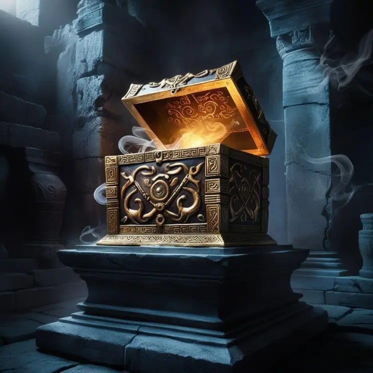

2. La Caja de Pandora (El origen del mal)
Después de que Prometeo robara el fuego para dárselo a los humanos, Zeus quiso castigar a la humanidad. Creó a la primera mujer, Pandora, y le entregó una vasija (o caja) como regalo de bodas, con la orden estricta de no abrirla nunca.
- La curiosidad: Pandora no pudo resistirse y abrió la tapa. De ella escaparon todos los males del mundo: enfermedades, dolor, vejez y guerra.
- El final: Asustada, cerró la caja rápidamente, dejando atrapado en el fondo un único elemento: la Esperanza (Elpis). Por eso se dice que "la esperanza es lo último que se pierde".
